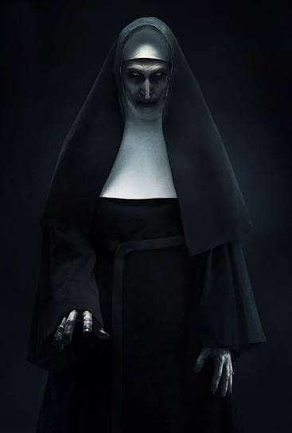

A Freira
Tipo de mídia: Filme de terror
feito por Lucas

Sobre o filme
A Freira é um filme de terror que conta a história de uma entidade demoníaca que assume a aparência de uma freira. A história acontece em um antigo mosteiro na Romênia, onde acontecimentos assustadores começam a acontecer.
Um padre e uma jovem noviça são enviados para investigar a morte misteriosa de uma freira. Durante a investigação, eles descobrem uma presença maligna que ameaça suas vidas.
Por que escolhi esse filme?
Escolhi A Freira porque gosto de filmes de terror que possuem suspense, mistério e cenas assustadoras. A aparência da personagem e o ambiente sombrio deixam a história ainda mais assustadora.